Sieve of Atkin
The Sieve of Atkin and Bernstein is a modern algorithm to compute the
prime numbers smaller than N. In the description below, we follow the
Wikipedia Article SieveOfAtkin. We
describe the program flow both as text, and graphically.
Program
Function Flip(list
SieveList, int n)
- If n <= length(SieveList): Flip the entry: n-th entry of
SieveList = not(n-th entry of SieveList).
Main Program
- Get integer number N > 6 as input.
- Initialize ListOfPrimes = [2, 3, 5].
- Create a list SieveList of N bools, all entries false.
- For x in
{1,…,}
- For y in
{1,…,}
-
- If n mod 60 in {1, 13, 17, 29, 37, 41, 49, 53}: Flip(SieveList,
n).
-
- If n mod 60 in {7, 19, 31, 43}: Flip(SieveList, n).
-
- If x > y and n mod 60 in {11, 23, 47, or 59}: Flip(SieveList,
n).
- While there are entries true in the SieveList:
- Determine k such that: The k-th entry of SieveList is the first with
entry true:
- Append k to ListOfPrimes.
- Set k-th entry of SieveList to false (we do not want to check it
again).
- Set mk^2-th entry of SieveList to false for all multiples
mk^2 of k^2 (m = 1,2,…,floor(N/k^2)).
- Return ListOfPrimes.
Main Program as graph
